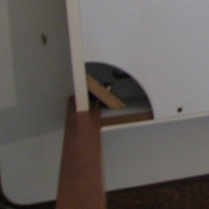

Quick Review of StudioDesk by BlueLounge
Posted: July 5th, 2010 | Author: chmullig | Filed under: personal | Tags: bluelounge, desk, evaluation, impressions, office, review, space, studio desk, studiodesk, work | 7 Comments »I’m starting to work from home full time now. In general I’m pleased, as the office isn’t an inspiring place at the moment. Unfortunately our apartment is small – 543 sqft according to the property office. We have one Ikea Jerker desk, but Marian’s been mostly using it, while I use the couch, coffee table and a side table. As I’ll be working full time, I’m reclaiming that desk. So, the search was on for a suitable addition. Unfortunately we have only one reasonable space option – along the same wall as the desk and TV where an ugly, never used chair sits.
If we move some furniture around we have about 49 inches of width to play with – not much. We took a look at various leaning desks, but rejected them because the space just didn’t make sense. Marian stumbled upon the StudioDesk by BlueLounge. It seemed intriguing and perfectly suited – she’s a laptop user in need of a small desk. Unfortunately it’s the only piece of furniture made by the company, and we couldn’t find a single independent review by anyone who had actually seen the desk in person. Was it cheap junk being sold for way too much? Would it hold up? Is it worth the money?
{kind=link}
Since nobody local seemed to carry it, I decided the only way to find out was to order the sucker and write a review. B&H offered it for a better price, with semi-reasonable shipping and most importantly, a 15 day return policy. I secretly ordered it at 11:49 AM on Monday, and Tuesday by 4 it had arrived. The shipping box was pretty banged up, and it was quite heavy.
{kind=link}
Assembly was reasonably easy. The hardest part was getting it out of the box, while keeping everything in good enough condition to be returned in. The instructions were buried somewhere in the middle so I’d basically unpacked it first.
{kind=link}
To attach the legs, you pop off the bottom of the cable tray, and bolt the legs into a diagonal cross brace. Then you screw in the two bottom panels on the trays (the photo on the left is with the trays in place) with 12 screws. That’s almost all the assembly. Once it’s upright you drop the top slider element into the grooves, and slide it forward.
{kind=link}
The bottom of the desk, with the panels removed but legs attached.
{kind=link}
The underside of the desk, ready to be flipped upright.
I didn’t look into it the materials too carefully, but it seems to mostly be particle board/fiberboard/laminate. Certainly the cable area is, and I assume the desk surface is – except for the edging. The legs are mahogany, and the diagonals are plain plywood. The sliders on the desktop seemed like they might be solid wood, but I couldn’t exactly determine. It’s very heavy, 70lbs. It seemed fairly well built, but ours had a crack in one of the sidewalls of the cable area. It wasn’t tooooo bad, but if we decide to keep it I think we’ll get it replaced. It goes down the height of the side board, and along its length for maybe a foot.
{kind=link}
Side long shot of the crack. You can see it along the left side.
Here’s a shot of the main desk top. You can see the various materials. Keep in mind that the desk is laying upside down here, so the highest part of the picture is actually the underside of the desk. You can also see the foam rubber that lines the inside of the slit along the back of the desk, to keep cables in place I assume.
{kind=link}
This is the inside of the desktop slot. Note: the desk is laying upside down, so the top of the image is the underside of the desk.
Flipping it over was easy enough. The desktop part just sits down in the middle, and then slides forward. That means you can’t accidentally pull it too far forward, it won’t let you. Clever, that.
{kind=link}
Right after adding the desktop and sliding it forward most of the way.
{kind=link}
Here's the inside of the storage compartment, from one end to the other.
The fake leather isn’t very nice, IMO. I don’t object to the fakeness, but it wasn’t a nice feel and it was very think. For example, Ikea a pleather desk pad that I think is substantially better. It just sits on top of the slide desktop and sticks slightly over the edge of the seams. It didn’t really sit naturally there, and felt like it could slide off or something. I added the laptop, some speakers, etc. The storage compartment was already feeling a little crowded with just a couple of cables, so I was definitely worried about getting a half dozen USB devices and such in there.
{kind=link}
Inside the storage compartment
{kind=link}
Here we go - the basic completed setup.
So there you see it – the desk setup. It’s really not huge, and the blotter awkwardly divides the space. In the end, we’re going to be sending it back. It was $533, and really not much better than a $180 Galant. The compartment is clever, but not really clever enough. Some nice $20 alternatives would be nearly as workable for organizing. Hopefully these reviews and comments will help you decide whether it’s the right option for you. I’m sure some folks will love it.
7 Comments »
This was extremely useful. Thank you!
I was considering this along with the “one less desk” by Heckler Design. Having seen the actual construction of this jobby, I’ll definitely be going with Heckler, which you might consider, btw. For the just about the same price (in Canada at least), it seems like a much more solid investment. Thanks for the review!
Great review! Big help.
For the record, we did return it and get the Galant. Not as pretty, but much simpler and cheaper.
great quick review thanks
Good review.
I was in a similar boat; Working from home, which is a small condo. We looked around, and found the StudioDesk at a couple of stores and really liked it. The store would order a dozen every two weeks, and they would go in a couple of days. They always have a waiting list for the desk.
Despite some it’s shortcomings (price being the most obvious), I love the desk. I think it’s great. I run a cinema display and a macbook pro, and it looks and works great. I don’t mind the faux leather – obviously real leather would be nice, but in the end, it’s functional, helps keep the clutter to a minimum, and I’m my opinion, looks great.
Thanks for your input, glad it’s working well for you!